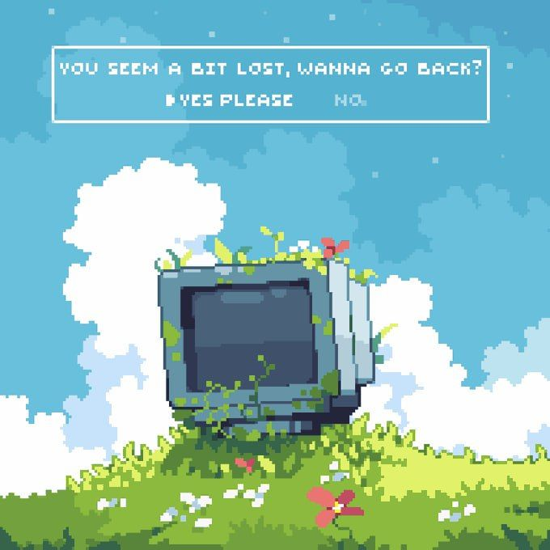

Фритрек и нулевой спринт: Подготовка к работе

</HTML>
Это было самое начало пути. На этом этапе важно было проникнуться основами и настроиться на учёбу. И, возможно, подумать, как новые знания могут повлиять на ваше будущее.
Я всегда любил компьютеры. С детства не упускал возможности по-ковыряться в железе, но за 26 лет никак не удавалось освоить код. И вот, собравшись с силами, я решил попробовать себя в этой роли. Многие мои друзья-программисты советовали мне начать с HTML/CSS, а курс от Практикума показался мне достаточно убедительным.